A badge in your top bar that shows when Claude Code is thinking, needs your approval, or is done. Approve requests right there, and keep every session in view.
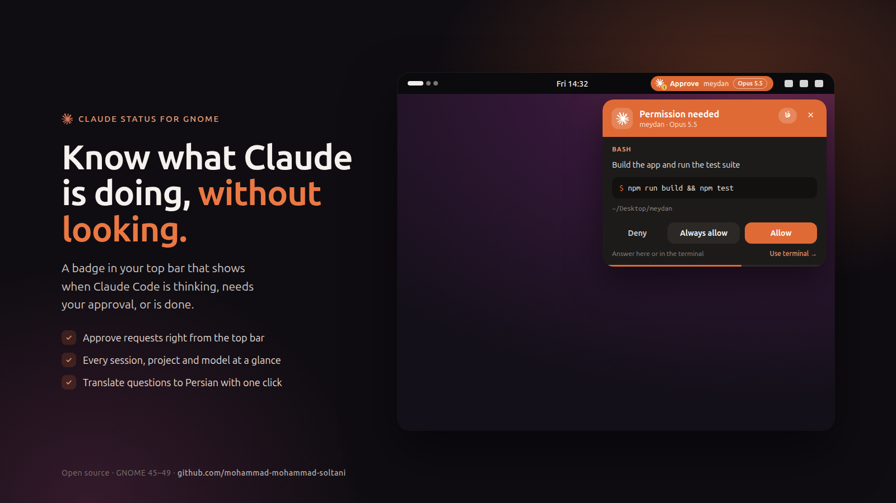
Built for people who run Claude Code in the background and want to know the moment it needs them.
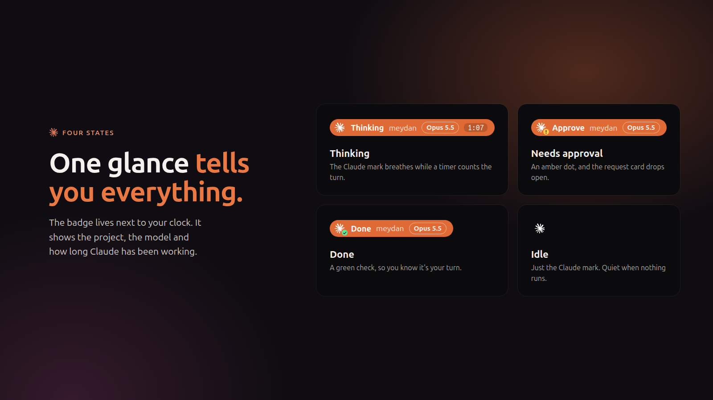
Thinking, needs approval, done or idle, with the project, the model and a timer.
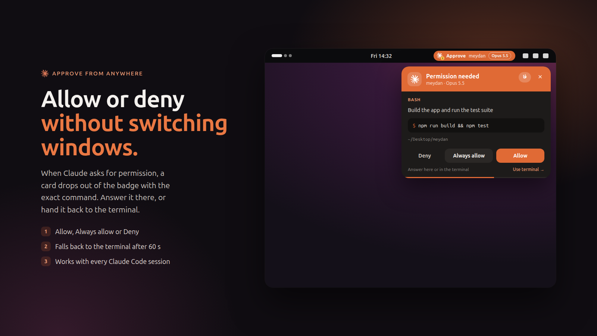
Allow, Always allow or Deny the exact command without switching windows.
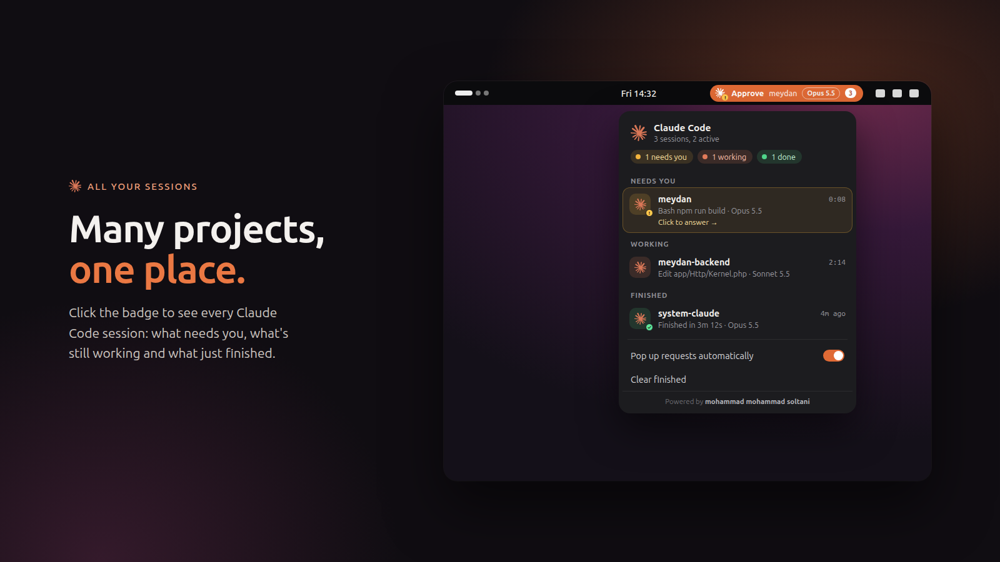
What needs you, what's working and what just finished, across all your projects.
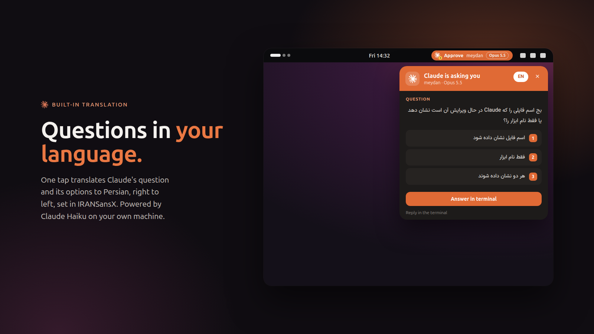
One tap translates Claude's question and its options, right to left, using Claude Haiku on your machine.
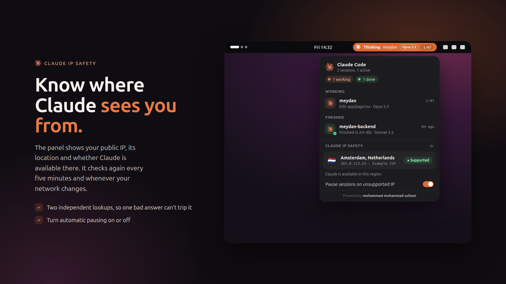
See your IP's location and whether Claude is available there.
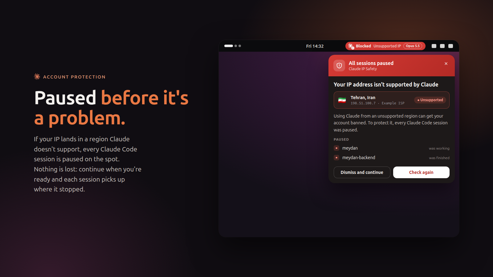
On an unsupported IP every session is paused, and resumes exactly where it stopped.
On Ubuntu and Debian, use the package and its setup app. Everywhere else, use the script.
Download the .deb from Releases and double-click it, or run:
sudo apt install ./claude-status_*_all.deb
Open “Claude Status” from your apps. It checks your system and connects everything to Claude Code.
The badge appears next to your clock. Restart any open Claude Code sessions.
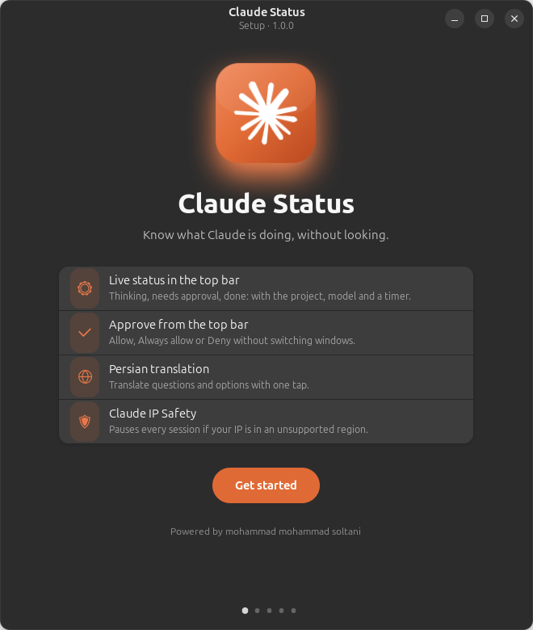
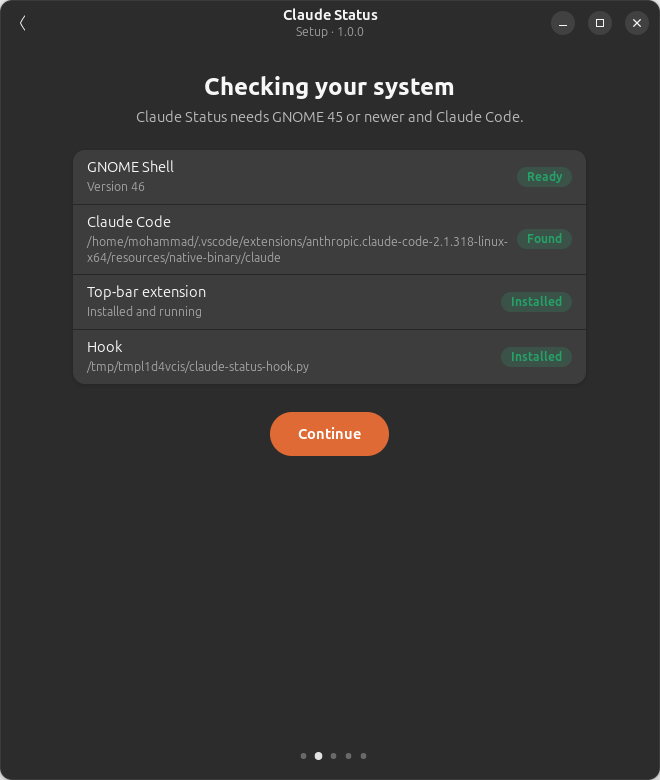
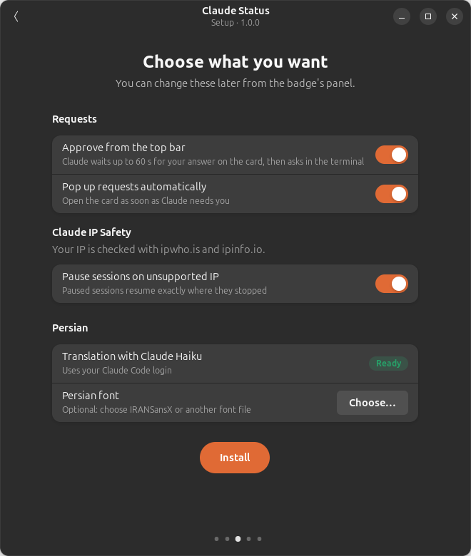
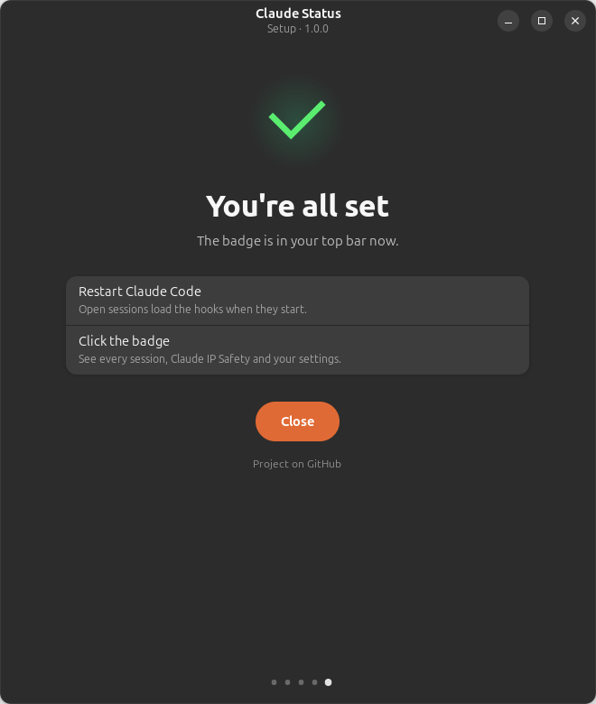
git clone https://github.com/mohammad-mohammad-soltani/ClaudeAddonTools.git cd ClaudeAddonTools ./install.sh
| Desktop | GNOME Shell 45, 46, 47, 48, 49 (Wayland / X11) |
|---|---|
| Claude Code | CLI, or the VS Code / Cursor extension |
| Distributions | Ubuntu 24.04+, Fedora 39+, Debian 13+, Arch, openSUSE Tumbleweed, Pop!_OS, Zorin |